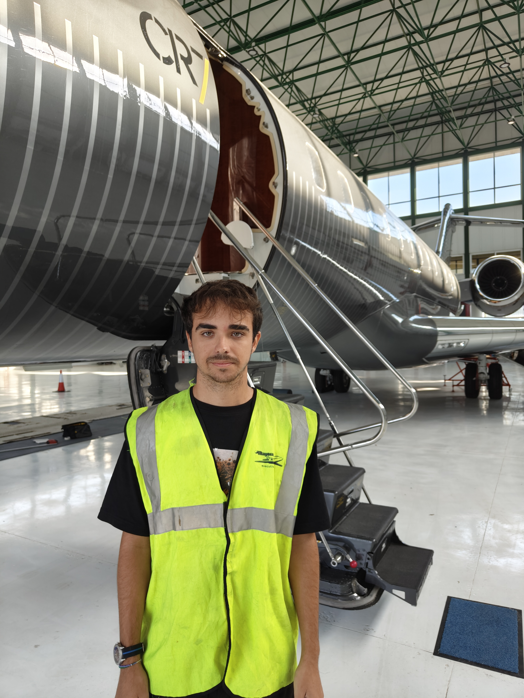

| Biografia | Horario | Localizacion | Galeria |
|---|
Darío Rivas, de 21 años, es un informático de Vélez-Málaga, conocido por su humildad y pasión por la tecnología. Desde joven, mostró interés en el mundo digital, lo que lo llevó a especializarse en informática. Con un enfoque constante en el aprendizaje, Darío se ha convertido en un profesional competente y dedicado, destacando por su capacidad de resolver problemas y ayudar a otros. Su compromiso y actitud positiva le han permitido ganarse el respeto en su entorno profesional y personal.
